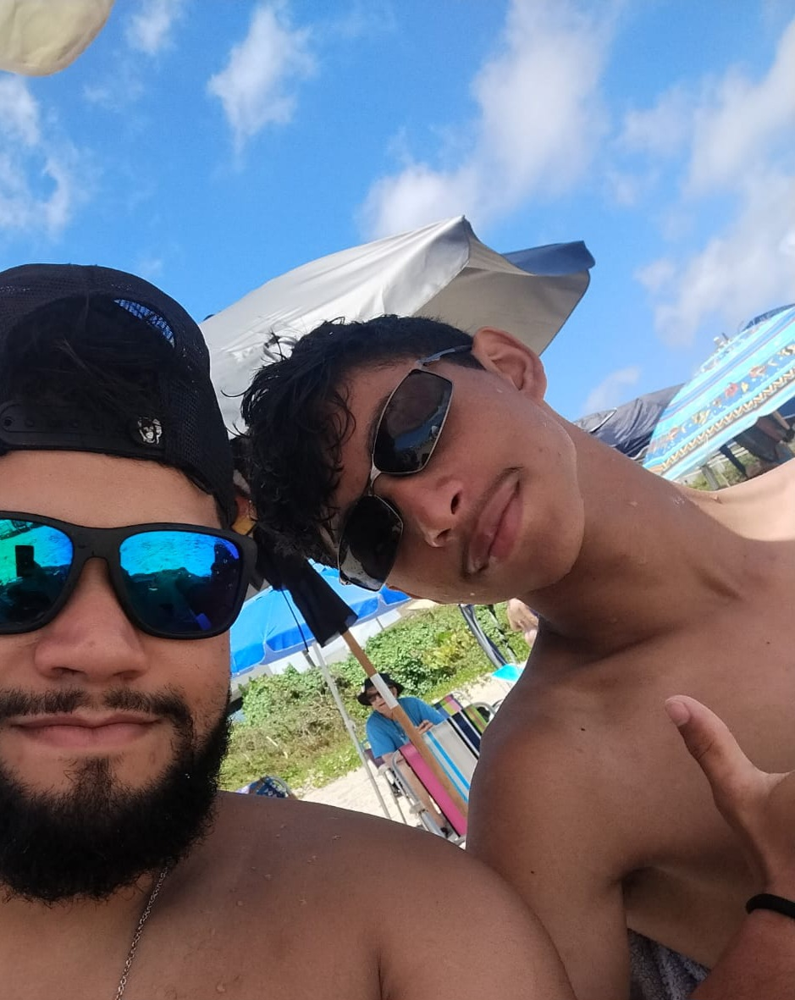

Sobre mim

Meu nome é Wallysson Soares Guimarães. Atualmente(2026), tenho 15 anos, sou estudante do IFTO. Estou aprendendo HTML e CSS, e estou gostando muito da área de TI. Quero me tornar um programador WEB no futuro (seja dev front-end, back-end ou, quem sabe um dia, full-stack)
Meus hobbies
- Jogar vidiogames
- Ver/estudar sobre carros
- Assistir animes
- Ouvir música


Lugares que quero conhecer
- Japão:Terra dos animes e dos carros JDM. Quero ver de perto os carros que sempre admirei nos games e animes.
- Alemanha:Berço da BMW, minha marca favorita. Quero conhecer o museu da BMW em Munique e acelerar na Autobahn.
- Itália:Onde nasceu a Lamborghini. Quero ver de verdade esses carros que parecem obras de arte.
- Suécia:Casa da Koenigsegg. Quero conhecer a fábrica em Ängelholm, construida num antigo hangar de caças, onde nasceu o Fantasma.
- Suíça:Qualidade de vida, paisagens incríveis. Quem sabe um dia não só visitar, mas morar por lá.


Meu maior sonho
Meu maior sonho é trabalhar com programação, construir uma vida estável e, um dia, conhecer de perto os carros e lugares que sempre admirei. Quem sabe levar minha família junto nessa jornada.
Contato
E-mail: carneirowalison72@gmail.com